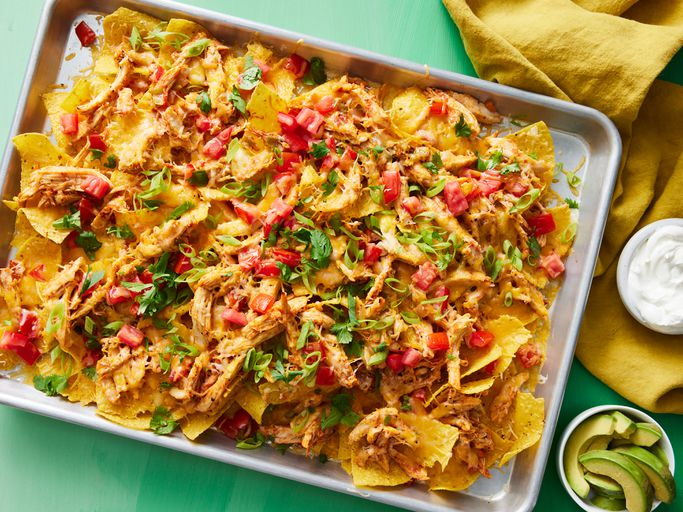

Restaurant-Style Chicken Nachos

Description
These chicken nachos are easy to prepare, delicious, and sure to be a big hit! Hearty enough for a meal. The key flavors are in the chicken topping which also makes a great filling for tacos and quesadillas. I recommend serving with sour cream and guacamole but you can be as creative as you like!
Ingredients
- 3 tablespoons canola oil
- 6 green onions, sliced, white parts and tops separated
- 2 cloves garlic, crushed
- 1 shredded, cooked, whole chicken breast
- salt and pepper to taste
- 1 cup salsa
- ½ (12 ounce) package tortilla chips
- 1 (8 ounce) package shredded Cheddar/Monterey Jack cheese blend
- ½ large tomato, diced
Steps
- Gather all ingredients.
- Preheat the oven to 350 degrees F (175 degrees C).
- Heat oil in a deep 12-inch skillet over medium heat. Add white parts of the green onions and garlic; cook and stir until onions are just tender.
- Mix in shredded chicken, salt, and pepper; toss until well coated. Stir in salsa.
- Arrange tortilla chips on a large baking sheet. Spoon chicken mixture over tortilla chips; top with shredded cheese and tomato.
- Bake in the preheated oven until cheese has melted, about 10 minutes. Remove from heat and sprinkle with green onion tops before serving.